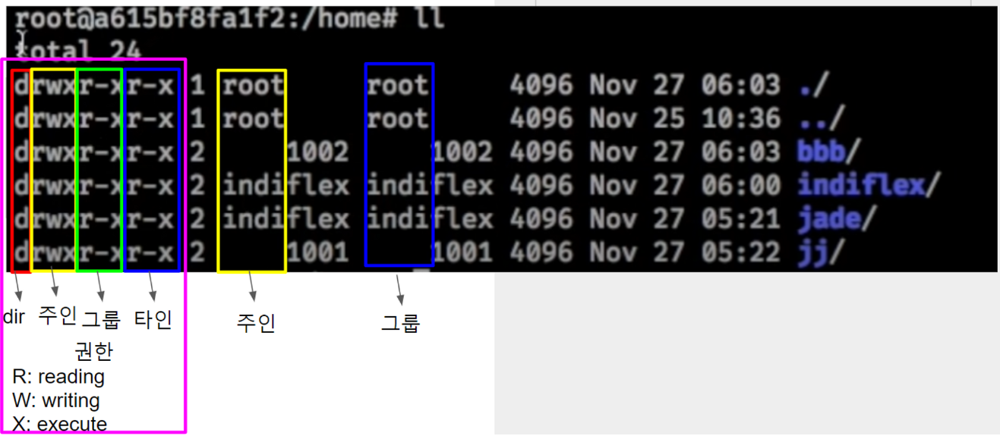

Linux Commands
WSL
Engineering
template
Author
Kwangmin Kim
Published
May 1, 2023
$: command 상태#: shell 상태/bin: 기본 명령어/boot: for booting/dev: device file, cd-rom/etc: config (설정 파일들), passwd, rc.d/home: user home dir/lib: shared library/media: ssd (device와 연결되어 mount해서 쓰는 directory 들)/opt: application software package/proc: process info/root: root home dir/sbin: 관리자용, ifconfig/srv: system data/tmp: temporary dir/usr: source or programs/usr/local: mysql 보통 이경로에 설치함/var: logs, ftp (file transfer protocol), spool(print와 관련된 파일), mail/lost+found휴지통!: history 중에서 ! 다음으로 시작하는 글자와 대응되는 명령어 찾아서 실행 ex) !l!!: 바로 이전 단계에서 실행했던 명령어 실행vmstat 1모르면 !! 계속 치면서 확인해야함historyman <명령>: 명령어의 manual ex) man mkdirctrl+alt+T: 터미널 오픈ls: (list) 현재 디렉토리의 파일 목록 출력ls -a: -a 옵션은 숨겨진 파일 출력ls -l: -l 자세한 정보 출력ls -al: 숨김 파일 (.파일명) 까지 볼 수 있음
touch <파일명>: 파일 만들기cat파일 내용 보기head -10 .bashrc: .bashrc파일안에 있는 데이터를 10줄 보여주기/ tail / lesspwd: (print working directory) 현재 디렉토리 경로 출력which <폴더명>: 폴더 경로 확인clear: terminal clearecho $PATH: 출력된 경로에 있는 파일들은 어디서든 실행 가능echo “aaaa” >> test.txt: “aaaa” 추가 입력됨. >> 는 append를 의미. >는 새로씀을 의미- echo 기능 확인 echo ‘#!/bin/sh’ > tt.sh → cat tt.sh → echo “echo 123” >> tt.sh → !cat→sh tt.sh 실행하면 123 화면에 출력되어야함
apt-get install localesmkdir: (make directory) 디렉토리 생성- directory와 file의 구분은
ls -al에서 파일권한 column에서 맨앞이 file은-directory는d로 표시되어 있음
- directory와 file의 구분은
rmdir: 디렉토리 제거cd: (change directory) 디렉토리 변경cd ..: 상위 디렉토리로 이동cd ~orcd: 홈 디렉토리로 이동cd /: root(최상위) 디렉토리로 이동cd -: 바로 이전 폴더로 이동
rm: (remove) 파일 삭제 (디렉토리 포함: 옵션 r,rm -r)rm -rf: 강제 삭제
mv: (move) 파일 이동 및 이름 변경- 파일 이동:
mv file1 dir1. 이때 dir1은 existing directory - 파일명 변경:
mv file2 file3file2를 file3로 renaming. 이때 file3은 non-existing file
- 파일 이동:
cp: (copy) file 및 directory 복사cp file1-to-copy file2-name-to-be-copied:cp file1 file2cp -r dir1-to-copy dir2-name-to-be-copied:cp dir1 dir2
tar: (Tape ARchiver) 파일 및 디렉토리를 압축 (여러 directories 및 files을 하나의 file로 압축) 및 해제- 압축 :
tar cvf name.tar file-to-zip\(\rightarrow\)tar cvf dir_1.tar dir_1 - 해제 :
tar xvf name.tar\(\rightarrow\)tar xvf dir_1.tar
- 압축 :
find <파일 이름>: 현재 폴더에서 파일 찾기find . <파일 이름>: 현재 폴더의 하위에 있는 모든 파일 찾기. 파일이 있어도 못찾았다는 명령어가 뜰때는 파일이름을 명시해줘야함find . -name <파일이름>: 현재 폴더 아래에 파일이름을 찾게 됨whoami: account namepasswd: 비밀번호 변경할 때 사용 (root도 가능)exit: user logoutcat: 파일을 읽는 명령어- 권한 부여
chmod +x file_name: file_name에 실행 권한 부여
- command mode → editor mode
i: (insert) 커서 왼쪽에 입력a: (append) 커서 오른쪽에 입력A: shift+a 라인끝에서 입력o: cursor 바로 밑 한줄 개행하면서 편집권한 생김O: 윗줄에 입력 모드 시작
- arrows (vi editor에서의 방향키)
<>: 방향키 (없다고 생각)h: 왼쪽j: 윗쪽k:아랫쪽l:오른쪽w: 어간 단위로 jumpctrl+f: page downctrl+u/b: page upshift+h: 커서를 화면의 제일 윗부분으로 이동. 파일의 제일 윗부분이 아님shift+m: 커서를 화명 중간으로shift+l: 커서를 화면 끝으로G: 문서 맨 밑으로 이동
- editor mode → command mode
- esc 왼손으로 누름
- 윗 방향키 누르면 이전 명령어들 나옴
- search 명령어
/검색어: 검색어 찾기n: 검색어 목록 다음b,N: 검색어 목록 이전
- command mode 명령어
cw: change word 한 단어 바꾸기dw: delete word 한 단어 삭제shift+A: 라인의 젤 끝에서 입력모드shift+^,shift+$,0v: 블록지정y: 블록 복사 ctrl+c (윈도우 명령 먹음)yy: 한개 라인 복사, 복제하고 싶은 라인에 커서를 놓고 yy를 누르면 복제됨p: paste ctrl+vdd: 한개 라인 삭제u: undo (ctrl+z 윈도우 명령어 안먹음)x: 뒤의 글자 지워짐 (delete)X: 앞의 글자 지워짐 (backspace)r: change one character.Shift+d: 커서 뒷부분 모두 지우기shift + $: 윈도우의 end keyshift + 6: ^, 윈도우의 home keyCtrl+r, Ctrl+e, Ctrl+y
- 명령모드에서 : 누름
:w: save ctrl+s:q: quit 나가기:qi: 저장x 나가기:wq: 저장 후 나가기ESC + :wq!: 저장 후 exit
:x:!: 커맨드라인 임시이동, enter치면 다시 복귀:!명령어: 커맨드라인에서 명령어 실행. :!ls, :!ls -al, !python a.py!%s: replace, 바꾸기:%s/검색어/새단어/g: g는 global 모든 검색어를 새단어로 바꿈:%s/검색어/새단어/ig: ignore case, 대소문자 구분 않고 새단어로 바꿈:n: n번째 줄로 이동:$: 마지막 줄로 이동:set nuor:se nu: 라인 넘버 보여주기:set nonu: 라인번호 지우기:set paste: 복사 붙이기 하면 indentation 이 자동으로 되어 문단이 망가지는데 colon + paste + p(=ctrl+v) 실행하면 문단 유지. python 스크립트 짤때 유용df: 현재 마운트 되어있는 디스크들du -m /home: home directory 에 디스크 사용량 MB로 표시du -sk /home: home directory 하위의 디스크 사용량 총합 표시 KBdu -sm /home: home directory 하위의 디스크 사용량 총합 표시 MBfree -m: 메모리 사용량 MB로 표시. Output상의 swap은 메모리가 부족할때 디스크를 사용량을 보여줌 swap 메모리가 많이 사용되면 도커의 메모리가 부족하다는 말로 메모리를 늘려줘야함top: CPU와 Mem의 사용량 보여주기. space bar를 누르면 최신버전으로 업데이트 됨. load average는 하드웨어가 갖는 부담. Tasks의 zombie는 process가 비정상적으로 종료된 것을 의미. 1을 누르면 cpu가 펼쳐짐. 나가기는 ctrl+cvmstat: top보다 편리한 버전. cache는 메모리와 CPU의 속도차를 개선 시켜주기 위한 빠른 메모리. cput란의 id는 idle을 의미 놀고있는 프로세스 표시. 나가기는 ctrl +cps: process 상황 조회 ps -ef | grep bashchmod:mod is mode이고 mode는 읽기, 쓰기, 실행 권한이 있는데 .sh에는 실행권한이 없음. 그래서./[tt.sh](http://tt.sh)와 같은 명령어를 실행하면 permission denied. 아래 그림에서 첫번째 행을 예를 들면, mode를 이진수로 표현하면 rwx r-x r-x = 111 101 101 (2진수) = 755 (10진수) → 7은 권한을 모두 부여, 5는 읽기와 실행 권한만 부여, 4는 읽는 권한만 부여. 그래서 shell (.sh)에 모든 권한을 나에게 부여하려면chmod 744 tt.sh를 실행시켜줘야함.chmod +x tt.sh: 나와 그룹에 모두에게 실행 권한만 주기chown <username>:<파일명>: owner를 바꾸는 명령어 또는 명의 변경. 그룹이 없으면 내 이름이 그룹이 됨  ln: symbolic link 걸기ln -s 목적지(존재하는) 링크명ln -s /home/indiflex/ttt ttt: /home/indiflex/ttt를 ttt로 링크를 걸었음 (윈도우의 바로가기 링크 만든 것과 같음).rm ttt하면 링크만 지워짐
1 Linux 기초
2 Linux File System Directories Filesystem Hierarchy Standard
cf. inode (ls -il) : file 정리 시스템으로 위와 같이 어느 디렉토리에 어떤 파일이 있는지 tree형태로 쉽게 알 수 있음